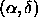
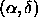

This provides a familiar interface to the object catalog, as it is based on
the MAST interface which
also serves catalogs from NASA missions and other surveys: GSC, DSS, and
VLA-FIRST. This is the interface most will prefer for straight-forward
queries based on . Objects that satisfy the query can be used
one of several ways. The list may also be written to a comma-delimited
text file, to be read by external programs, such as Microsoft Excel. The list may
be written as a FITS binary table. Finally, the list may be browsed as an
HTML table, where specific objects and data products (e.g. the corrected frame
for the object, or the spectra for those objects with spectra) are then selected
for use by the Data Archive Server.
which
also serves catalogs from NASA missions and other surveys: GSC, DSS, and
VLA-FIRST. This is the interface most will prefer for straight-forward
queries based on . Objects that satisfy the query can be used
one of several ways. The list may also be written to a comma-delimited
text file, to be read by external programs, such as Microsoft Excel. The list may
be written as a FITS binary table. Finally, the list may be browsed as an
HTML table, where specific objects and data products (e.g. the corrected frame
for the object, or the spectra for those objects with spectra) are then selected
for use by the Data Archive Server.